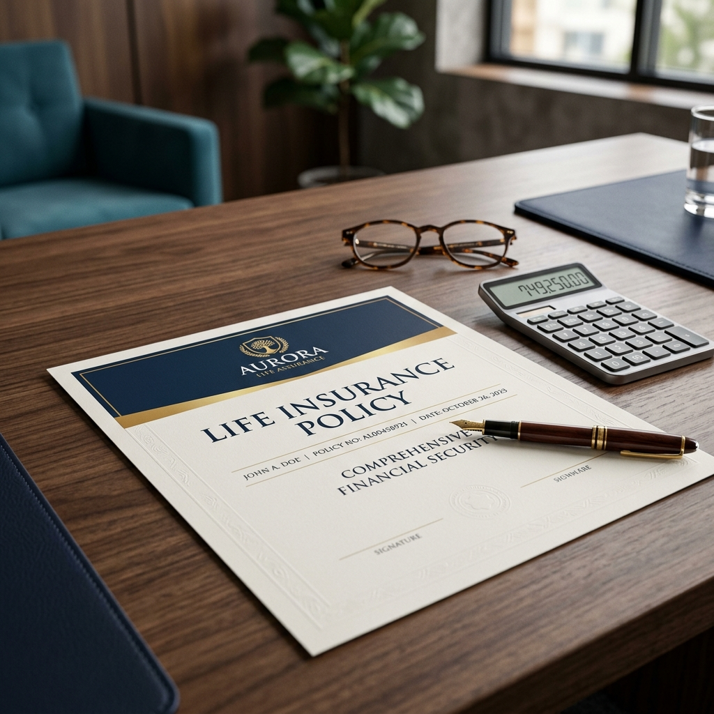

The 2026 Investor’s Guide to Life Insurance: Building a Bulletproof Financial Foundation
By Financial Quest Strategy Team • April 17, 2026

In the world of investing, we often spend our time looking through a telescope, searching for the next "productivity catalyst" or analyzing how the One Big Beautiful Bill (OBBB) will shift our tax brackets. But while looking at the horizon is important, a wise strategist also looks at the ground beneath their feet. In 2026, that ground is your "defense"—and there is no defensive tool more powerful, or more misunderstood, than life insurance.
The Big Picture
As we navigate 2026, "sticky" inflation of 3% has made the cost of living—and the cost of protecting a family—higher than ever before. However, the OBBB has provided a unique opportunity by raising the standard deduction to $32,200 for joint filers, offering a "tax cushion" that smart investors are using to fund robust life insurance policies.
Why It Matters to You: Protecting Your "Human Capital"
To an entry-level investor, your greatest asset isn't your brokerage account or your 401(k); it is your Human Capital.
If you are 30 years old and earn $75,000 a year, your human capital is worth millions of dollars. But that asset is fragile. In a 2026 economy where the Fed is battling persistent inflation, your family’s ability to maintain their lifestyle depends entirely on that income. Life insurance is the only financial product that can instantly "complete" your savings plan if you are no longer there to do it yourself. It ensures that the Roth conversion strategies and the 2026 tax advantages you've worked for don't disappear when they are needed most.
Part I: The Two Pillars of Protection
The biggest hurdle for new investors is often the "alphabet soup" of policy types. Let’s break down the two primary options you will encounter in 2026.
| Feature | Term Life Insurance | Permanent Life Insurance |
|---|---|---|
| Simple Definition | Insurance you "rent" for a specific period (e.g., 20 years). | Insurance that covers your "whole life" and never expires. |
| Cost | Lowest cost; fits easily into a 2026 budget. | Higher cost; acts as both insurance and a savings vehicle. |
| Best For | Covering a mortgage or a child’s education. | Estate planning and tax-free wealth transfer. |
| Cash Value | None. | Includes a "Cash Value" (a built-in savings account). |
Strategy Tip Most entry-level investors in 2026 find that Term Life Insurance offers the best "bang for your buck." It allows you to buy a large amount of protection—say, $1 million—for a relatively small monthly payment. This keeps your cash flow free to take advantage of the 2026 Roth catch-up rules.
Part II: The 2026 Tax Advantage (The OBBB Factor)
The One Big Beautiful Bill (OBBB) changed the math for many Americans. With the joint standard deduction now at $32,200, more of your income is protected from federal taxes than ever before.
But there is a catch: Sticky inflation means that while you are paying less in taxes, your "real" purchasing power is being challenged. This makes the Beneficiary payout of a life insurance policy even more vital.
In the eyes of the IRS, life insurance proceeds are generally received income tax-free. In a high-inflation, high-deduction world, receiving a $500,000 or $1,000,000 check that isn't touched by the taxman is the ultimate financial safety net. It allows your family to pay off a mortgage or fund a college education without having to sell off stocks in a down market or worry about capital gains taxes.
Part III: AI as Your Productivity Catalyst
One of the most exciting shifts in 2026 is how technology has simplified the "boring" parts of insurance. We now treat AI as a Productivity Catalyst.
In the past, getting life insurance required Underwriting, which often involved weeks of waiting and a visit from a nurse for a blood draw.
Today, AI-driven "Instant Approval" platforms can analyze your health data and lifestyle in seconds. This means a 2026 investor can go from "unprotected" to "fully insured" in the time it takes to drink a cup of coffee. This efficiency has lowered the "barrier to entry," making it easier for you to check this off your to-do list and get back to your long-term growth strategy.
Part IV: 3 Actionable Steps for the 2026 Investor
1. Calculate Your "Family Survival Number"
A common mistake is picking a round number like "$500,000" because it sounds like a lot. In a 3% inflation environment, $500,000 doesn't go as far as it used to. Aim for a death benefit that is 10 to 12 times your annual income. This ensures your family has enough "runway" to invest the proceeds and live off the interest.
2. Audit Your "Work" Policy
Many 2026 employers offer life insurance as a benefit. While this is a great start, it is often "non-portable." If you change jobs to chase a higher salary elsewhere, that coverage disappears. Use your OBBB tax savings to buy a private policy that follows you, not your boss.
3. Name "Contingent" Beneficiaries
Most people name their spouse as their primary beneficiary and stop there. But what if something happens to both of you? Ensure you have a Contingent Beneficiary (a backup) or a trust named to ensure the money goes exactly where you intended without getting stuck in a long court process.
Myth vs. Reality: 2026 Edition
Myth: "I'm single and have no kids, so I don't need life insurance."
Reality: In 2026, insurance is cheaper when you are young and healthy. Locking in a low rate now protects your future self—and can even cover your final expenses or any co-signed debts (like student loans) that might fall on your parents.
Myth: "Inflation makes life insurance a bad investment."
Reality: Insurance isn't an "investment" in the traditional sense; it’s a risk-transfer tool. You are paying a small, fixed amount to transfer a massive, catastrophic risk to a multi-billion-dollar company.
The Bridge: Why the "DIY" Approach Falls Short
Reading a guide is a great way to build your financial vocabulary, but your life isn't a textbook. Your needs are unique. Perhaps you have a "blended family," or maybe you’re a business owner trying to figure out "Buy-Sell" agreements. Or perhaps you're simply trying to figure out how to balance your 401(k) contributions with your insurance premiums while inflation continues to linger at 3%.
The most successful investors in 2026 don't work in isolation. They use a professional financial advisor to act as a "Wealth Architect." An advisor ensures that your insurance doesn't just exist, but that it works in harmony with your tax strategy, your estate plan, and your dreams for the future.
While these steps are a powerful start, a personalized plan from a professional is the best way to ensure your peace of mind is permanent.
Ready to Build Your Defensive Line?
Book a strategy session with a vetted advisor to establish your baseline life and risk strategies.
Find Your Architect →